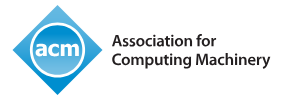

Recognizing outstanding doctoral dissertations in the field of data management.
The Hellenic ACM SIGMOD Doctoral Dissertation Award is established by the Hellenic ACM SIGMOD Chapter for recognizing outstanding doctoral research conducted within the Hellenic data management community.
This initiative is inspired by leading international distinctions such as the Jim Gray Doctoral Dissertation Award and aims to promote excellence and visibility within the Greek research ecosystem. The award will be presented annually to a doctoral dissertation that demonstrates significant contributions to the field of data management, including but not limited to database systems, data science, data analytics, and related areas.
The award aims to highlight exceptional dissertations that demonstrate originality, depth, and impact in areas broadly related to data management, including (but not limited to):
Supported by
